地政学
リヴィウはポーランド国境に近い西部の要衝です。鉄道、道路、援助、避難、外交関係者の移動が集まり、前線から離れた都市でありながら、戦時国家を支える後方の結節点として動き続けています。国境都市の現実です。
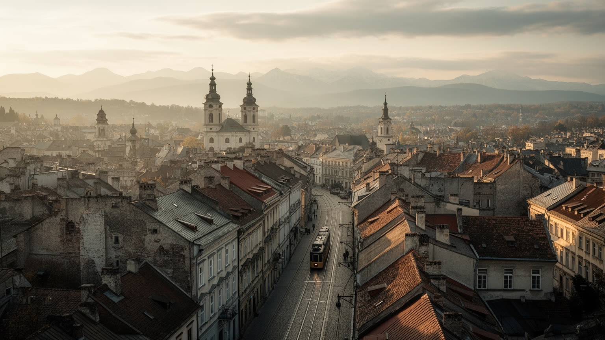
🇺🇦 ウクライナ / ヨーロッパ / World City Atlas
カルパチア山麓に近いウクライナ西部の文化都市です。旧市街、教会、大学、IT、鉄道物流、避難民支援、戦時の後方拠点が重なり、ヨーロッパへの玄関口として動いています。
都市の骨格
リヴィウはポーランド国境へ近く、鉄道、大学、教会、IT、旧市街観光が重なる都市です。戦争後は避難、医療、復旧支援、企業移転、国際援助の窓口も担い、文化都市の静けさと後方拠点の緊張を同時に抱えています。
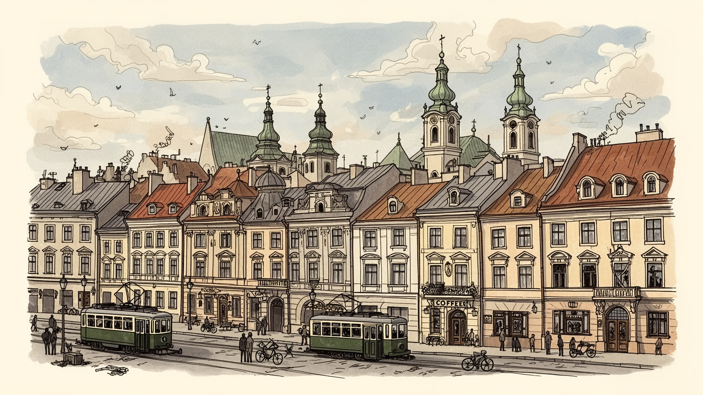
リヴィウはポーランド国境に近い西部の要衝です。鉄道、道路、援助、避難、外交関係者の移動が集まり、前線から離れた都市でありながら、戦時国家を支える後方の結節点として動き続けています。国境都市の現実です。
IT、大学、医療、観光、食品加工、鉄道物流が都市を支えます。避難企業と人材が流入し、技術職だけでなく看護、介護、修理、配送、清掃、宿泊の労働が戦時の日常を支えます。雇用の格差も課題です。今も続きます。
ギリシャ・カトリック、正教会、アルメニア教会、ユダヤ人の記憶が旧市街に重なります。書店、大学、劇場、合唱、カフェ文化も強く、宗教と文化は観光資源である前に生活の暦です。祈りは続きます。今も街を支えます。
広場、教会、石畳、丘、カフェはリヴィウの顔です。同時に住民は空襲警報、停電、避難民の受け入れ、家賃、医療需要に向き合います。観光の回復は、暮らしの余裕と文化財保護に左右されます。慎重な再開が必要です。
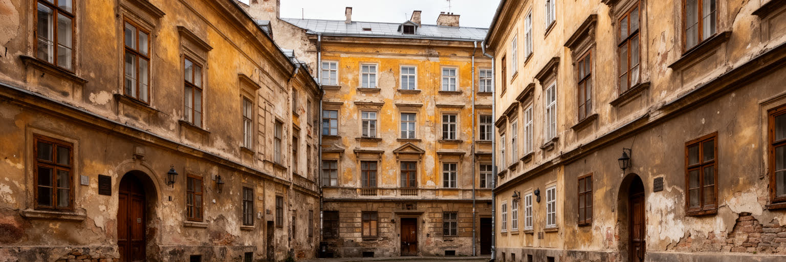
リヴィウの地政学は、旧市街の美しさだけでは説明できません。都市はポーランド国境から比較的近く、鉄道と道路でワルシャワ、クラクフ、キーウ、カルパチア方面を結びます。平時には観光客、学生、商人、IT人材が行き交う西の入口でしたが、全面侵攻後は避難、援助物資、医療搬送、外交団、報道、企業移転の流れが集中しました。前線から遠いことは安全を意味するだけでなく、後方として責任を負うことでもあります。駅前、ホテル、大学、病院、倉庫、行政窓口は、移動してきた人を受け入れ、さらに別の場所へ送り出す機能を持ちます。国境に近い都市は、国家の外縁ではなく、国外支援と国内生活をつなぐ接続面です。リヴィウを読む時は、中央広場の石畳と同じ重さで、夜行列車、国境待ちの車列、医療車両、支援団体の事務所を見る必要があります。都市の落ち着いた景観の下で、移動と待機の時間が絶えず流れています。避難する人にとってリヴィウは到着地であり、通過点であり、帰還を待つ場所でもあります。だから都市の役割は観光都市から一時的に変わったのではなく、国境都市が本来持つ複数の機能が戦時に露出したと考える方が正確です。加えて、国境に近いことは情報の速さも変えます。国外の制度、支援条件、鉄道時刻、通関の遅れが住民の会話に入り、都市は国内外の不確実性を同時に調整します。この調整力こそ、リヴィウの現在の地政学的な重みです。
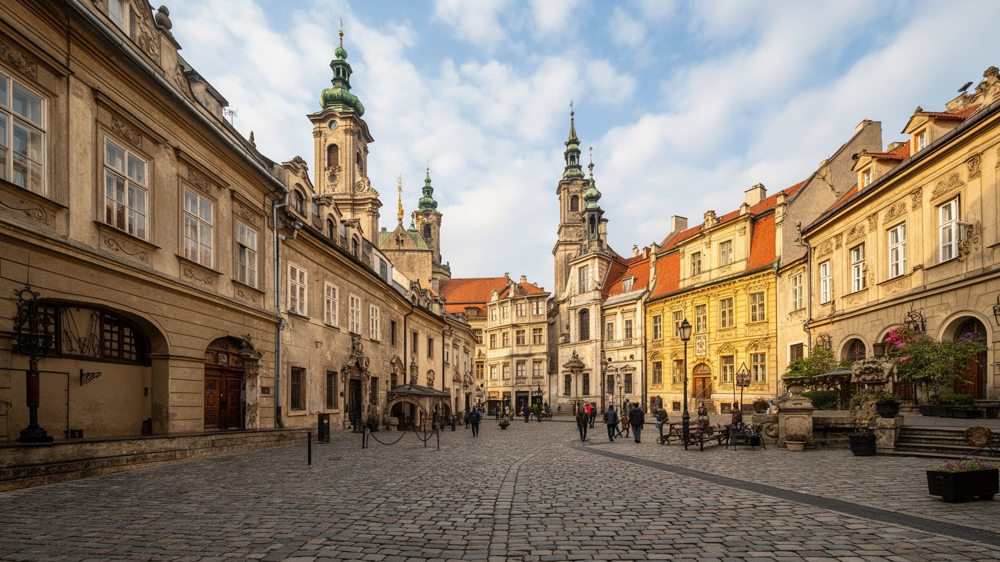
リヴィウ旧市街は、中央市場広場、石畳の路地、教会塔、商館、劇場、カフェ、中庭が密に重なる都市遺産です。ポーランド、ハプスブルク、ウクライナ、アルメニア、ユダヤ、オーストリア的な行政文化の記憶が建物の高さや街路の曲がり方に残り、一つの国民史だけでは読み切れません。世界遺産としての価値は、華やかな外観だけでなく、異なる宗派と商業が近い距離で都市を作った履歴にあります。戦争はこの遺産を観光資源から保護対象へと強く引き戻しました。爆風対策、窓の養生、彫刻の保護、火災への備え、修復費、保険、所有関係の調整が日常の管理に加わります。古い建物は美しい一方で、断熱、階段、配管、耐火、防空時の避難に弱さも持ちます。旧市街を守ることは、写真に残る外壁を保存するだけでなく、住民、店主、修復職人、学生、聖職者が使い続けられる環境を整えることです。観光客の視線が戻るほど、暮らしの場所を舞台化しすぎない配慮も必要になります。リヴィウの遺産は、都市が多層の記憶を抱えながら現在の危機に耐える方法を示しています。保存は専門家だけの仕事ではありません。住民が窓を直し、店が看板を控えめにし、学校が地域史を教え、行政が修復の優先順位を説明することで、遺産は日常の判断として守られます。石畳の都市は生活の手入れで続きます。この手入れが記憶を保ちます。
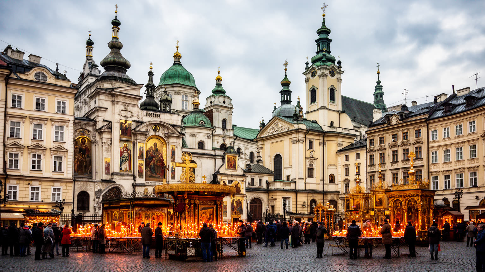
リヴィウでは宗教が都市の輪郭を作っています。ウクライナ・ギリシャ・カトリック教会、正教会、ローマ・カトリック、アルメニア教会、かつて大きな存在でしたユダヤ共同体の記憶が、広場、墓地、鐘の音、祭日、学校、慈善活動に重なります。教会は観光客が見る建築であると同時に、戦時の葬儀、祈り、支援、避難者への食事、寄付、兵士の家族を支える場でもあります。宗教儀礼は抽象的な信仰だけでなく、都市が喪失をどう受け止め、共同体をどう保つかという社会的な仕組みです。復活祭やクリスマスの行事、合唱、蝋燭、墓参りは、戦争によって意味を変えながら続きます。宗派の違いはリヴィウの歴史的な厚みである一方、政治や記憶の対立とも無縁ではありません。ソ連期の抑圧、独立後の復興、現在の戦時支援が、宗教施設の役割を何度も変えてきました。教会を巡る時は、塔やイコンの美しさだけでなく、その空間が避難、追悼、教育、慈善を担っていることを見る必要があります。宗教は過去の遺物ではなく、傷ついた都市が人を結び直す現役の基盤です。鐘の音は観光の背景音ではなく、葬送、祈願、記念日、支援の呼びかけを知らせます。ユダヤ人墓地や失われたシナゴーグの記憶も、都市が誰を失ったのかを問い続けます。祈りは公共の記憶を保つ方法です。その記憶が街を支えますよのです。
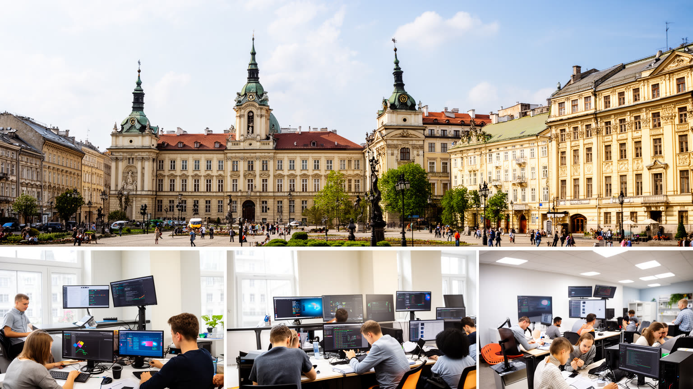
リヴィウはウクライナ西部の教育とITの中心でもあります。大学、工科系人材、語学力、欧州市場への近さが組み合わさり、ソフトウェア開発、外部委託、スタートアップ、デザイン、技術教育が成長してきました。戦争後は東部や南部から移ってきた企業や人材も加わり、都市の労働市場はさらに複雑になりました。ITは空襲や停電の影響を受けても遠隔で働ける強みを持ちますが、発電機、通信、国外顧客の信頼、兵役、家族の避難、精神的な疲労という制約も抱えます。大学は授業を続けるだけでなく、避難学生の受け入れ、研究者の移動、医療や復旧に関わる専門知の提供も求められます。高賃金の技術職が増えると、家賃、飲食、サービス価格が上がり、観光業や公共サービスで働く人との格差も見えやすくなります。リヴィウの産業を評価するには、IT企業の数だけでなく、清掃、配送、警備、カフェ、看護、教育、修理の仕事が同じ都市を支えていることを忘れてはいけません。知識産業の成長は都市を国際化しますが、その利益が住民の住宅、交通、教育に戻るかが重要です。学生街としてのリヴィウは、若い人が専門を学び、国外へ接続しながら地元に残るかを選ぶ場所でもあります。人材流出を防ぐには、仕事だけでなく住まい、文化、公共交通、安心して学べる環境が必要です。学びは都市の資本です。
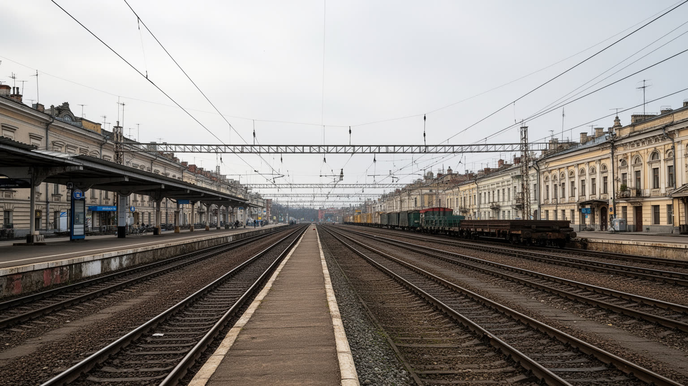
リヴィウ駅は、都市の役割を最もよく示す場所の一つです。キーウ、オデーサ、ハルキウ方面から来る列車、ポーランド国境へ向かう移動、援助物資、帰還する家族、報道関係者、兵士、学生が同じ空間を使います。鉄道は単なる交通手段ではなく、戦時の生活線です。道路輸送が混雑し、航空便が通常運航できない状況では、列車の信頼性が避難、医療、教育、物流を支えます。貨物では食品、医薬品、発電機、建材、復旧資材が動き、倉庫やトラック輸送、税関、修理工場、駅周辺の宿泊業と結びつきます。物流が増えるほど、騒音、道路負荷、労働時間、燃料、住宅地との摩擦も生まれます。駅で働く人、車両を整備する人、荷物を運ぶ人、案内する人の反復作業が、都市の後方機能を実際に動かしています。リヴィウの鉄道を読むことは、地図上の線ではなく、人が安全な場所を探し、物資が前線や被災地へ届くまでの時間を見ることです。駅の待合室やホームには、都市が受け止めてきた移動の記憶が積み重なります。戦時の交通政策は、速度よりも信頼性と弱い人への届きやすさで評価されるべきです。列車が遅れることは、単なる不便ではなく、医療予約、国境通過、家族の再会、支援物資の到着を遅らせます。時刻表の安定は生活の安定であり、鉄道員の労働は都市の安心を支える公共サービスです。駅は都市の脈です。
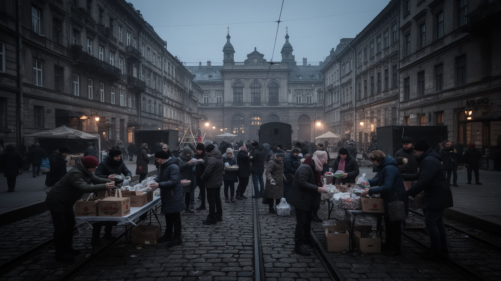
全面侵攻後のリヴィウは、避難民支援と医療の拠点として大きな負担を引き受けました。駅や公共施設、学校、修道院、ホテル、民間住宅は、東部や南部から逃れてきた人を一時的に受け入れ、行政窓口、食事、衣類、仕事探し、子どもの教育につなげました。病院やリハビリ施設は、負傷者、障害を負った人、心理的な傷を抱える人、慢性疾患の患者を支えます。医療は手術や治療だけでなく、義肢、リハビリ、住まいの改修、職場復帰、家族の介護を含む長い過程です。支援が長期化すると、家賃、学校の定員、医療従事者の疲労、地域住民との資源配分が課題になります。リヴィウの包容力は、親切な受け入れの物語だけでは測れません。避難してきた人が単なる一時滞在者ではなく、働き、学び、祈り、街の一員として暮らせるかが問われます。医師、看護師、教師、通訳、行政職員、ボランティア、清掃や調理の人の労働が、その基盤を作ります。人道支援は危機対応であると同時に、都市の住宅政策、医療政策、教育政策を変える圧力でもあります。リヴィウは安全な後方であるほど、見えにくい疲労をため込む都市でもあります。さらに、負傷者の回復には段差の少ない道、利用しやすい公共交通、職場の理解、家族への相談支援が必要です。医療拠点としての都市は、病院の中だけでなく街路全体で人の回復を支えます。
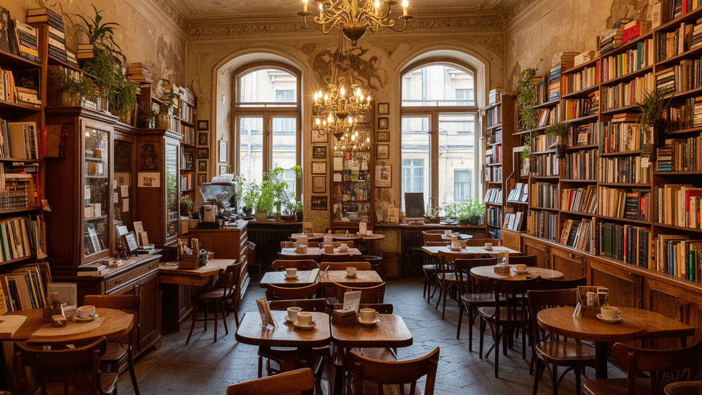
リヴィウの文化は、劇場や教会だけでなく、カフェ、書店、大学、出版社、音楽祭、路上の会話に宿ります。中央広場周辺のカフェ文化は観光の象徴ですが、歴史的には知識人、学生、商人、記者、芸術家が情報を交換する場でもありました。コーヒーや菓子は消費の楽しみであると同時に、人が長く座り、議論し、読書し、待ち合わせる都市の時間を作ります。戦時には、カフェや書店の意味も変わりました。停電時に充電できる場所、寄付を集める場所、兵士や避難者を支援する場所、喪失を抱えた友人が会う場所になります。文化産業は華やかに見えて、編集、翻訳、印刷、配送、音響、照明、清掃、接客の労働に支えられています。観光客が戻るほど、地元の読者や学生が使える価格と場所を残せるかも重要です。リヴィウのカフェ文化を読むことは、雰囲気を味わうだけでなく、会話が社会をつなぎ、書物が記憶を保存し、小さな店が公共空間の役割を担うことを見ることです。出版や音楽は国民意識を強める一方、複数の言語と記憶をどう扱うかという課題も抱えます。静かなテーブルの上にも、戦争と文化継承の緊張があります。文化の場所が残るかどうかは、家賃、印刷費、物流、電力、若い作り手の収入に左右されます。表現の自由と生活の持続が両立して初めて、文化都市の厚みは保たれます。小さな店も公共空間です。
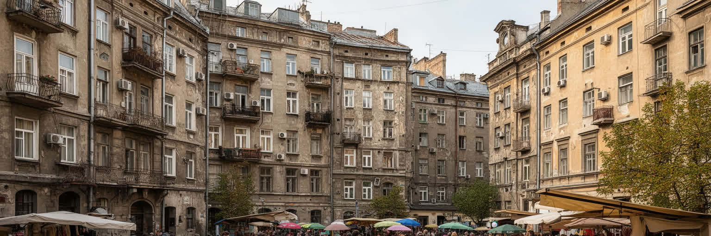
リヴィウの暮らしは、旧市街の集合住宅、郊外の団地、新しいマンション、丘の住宅地、大学寮、避難者の一時住まいが重なって成り立ちます。戦争で人口の流れが変わると、空き部屋、家賃、学校の定員、病院の待ち時間、公共交通の混雑が変化しました。安全な西部の都市として人が集まるほど、住める場所を探す難しさも増します。古い建物は魅力的ですが、断熱、暖房、配管、階段、避難経路に課題があります。停電や空襲警報は、エレベーター、暖房、冷蔵庫、在宅勤務、子どもの学習に影響します。観光都市の印象の背後には、保育、介護、買い物、通勤、雪や雨の日の移動、冬の光熱費という生活の細部があります。避難してきた人と長く住む人の間で、家賃や支援をめぐる不公平感が生まれることもあります。リヴィウの日常を理解するには、広場の賑わいだけでなく、階段の暗さ、共同中庭、バス停、修理を待つ窓、学校の掲示、医療機関の列を見る必要があります。暮らしを支える都市とは、美しい中心部を持つ都市ではなく、弱い立場の人が冬を越し、働き、学び、助けを求められる都市です。生活の余白が文化都市の成熟を決めます。住宅政策は福祉や教育と切り離せません。住まいが不安定なら、子どもの学校、通院、仕事探し、地域のつながりも不安定になります。日常の安定は復興の土台です。
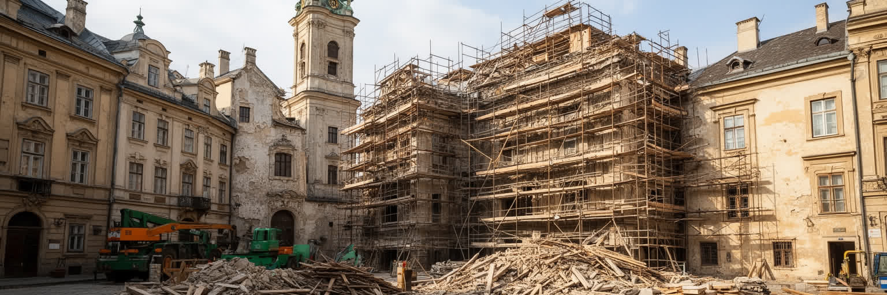
リヴィウ観光は、中央市場広場、オペラ劇場、教会群、アルメニア街、中庭、書店、カフェ、リチャキウ墓地、高い城山の眺めを歩いてつなぐ体験です。都市の大きさは巨大ではありませんが、坂、塔、路地、広場が視線を細かく変え、歩くほど歴史の層が現れます。観光は地域経済を支え、ガイド、宿泊、飲食、土産物、交通、修復職人に仕事を作ります。一方で、過度な観光化は住民向けの店を減らし、家賃を上げ、旧市街を写真の背景に変えてしまう危険もあります。戦時の観光にはさらに配慮が必要です。空襲警報、停電、追悼の場、避難してきた人の生活、兵士の家族の悲しみが同じ街にあります。訪れる人は美しい景観だけでなく、文化財を守る寄付、地元店への支出、住民空間への敬意を通じて都市に関わることができます。丘から見るリヴィウは穏やかですが、その屋根の下には後方拠点としての緊張が続いています。観光の再生は、危機を隠して通常営業を装うことではなく、都市が抱える現実を尊重しながら歩く方法を作ることです。名所と日常が近いリヴィウでは、静かに見る態度そのものが観光の質を決めます。さらに、墓地や追悼碑を訪れる時は、記念写真の場所ではなく家族の悲しみが続く場所として扱う感覚が必要です。観光の成熟は、消費額よりも配慮の深さに表れます。歩き方にも倫理があります。
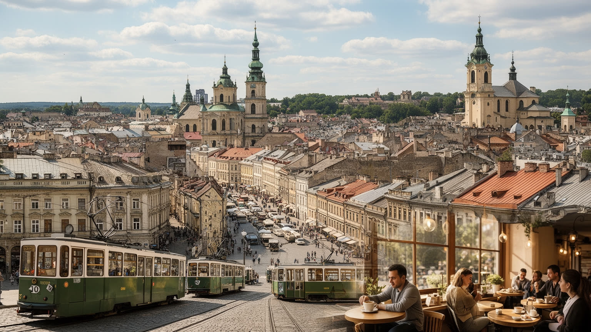
リヴィウを世界地図の中で読むと、単なる美しい旧市街ではなく、国境、宗教、教育、IT、鉄道、避難、医療、観光、復興が重なる都市として見えてきます。教会塔とカフェの景観は都市の顔ですが、その下では列車が人を運び、病院が回復を支え、大学が授業を続け、企業が遠隔で働き、ボランティアが物資を仕分けています。リヴィウの重要性は経済規模だけでは測れません。ウクライナがヨーロッパと接続し、戦時の社会を保ち、文化の記憶を守るための後方の結節点だからです。多民族の遺産は都市に深みを与えますが、同時に排除、迫害、言語、帰属の歴史を問い続けます。観光客にとっての魅力と、住民にとっての生活負担は同じ場所で起こります。だからリヴィウを読むには、広場の美しさ、教会の祈り、IT企業の成長、駅の混雑、避難者の住まい、文化財の保護を分けずに見る必要があります。都市の強さは、危機を遠ざけることではなく、危機を受け止めながら日常を組み直す力にあります。リヴィウは、ヨーロッパの文化都市が戦争の時代にどのような社会的役割を担うのかを示す、静かで重い都市です。復興を考える時も、この都市は前線の外側にある補助的な場所ではありません。住宅、医療、教育、文化、交通を保つことで、国全体の回復を支える基盤になります。美しさと責任が同じ広場に立つ都市です。